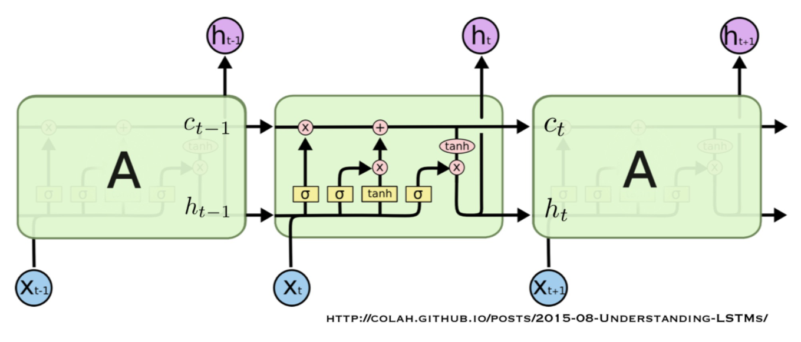
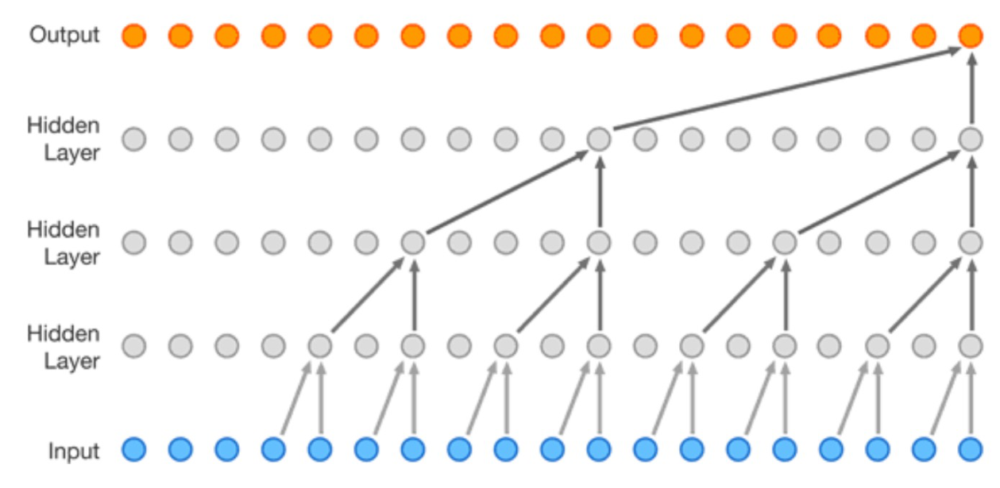

2. 시계열 예측 심화
학습 안내 · 이전: 기초 · 다음: 시계열 평가
시계열 모델의 레이어를 볼 때는 어느 시점에서 어떤 값을 읽고, 어느 미래 시점의 무엇을 예측하는지부터 확인한다. 언어 모델에서 다음 토큰을 고르던 출력층이나, 비전 모델에서 이미지의 공간 패턴을 찾던 합성곱도 시계열에 적용하면 맡는 일이 달라진다.
읽는 위치와 출력의 의미부터 확인한다
일요일 영업을 마친 뒤 월요일과 화요일의 판매량을 예측한다고 하자. 일요일까지의 판매량과 미리 정해진 월요일 행사는 알지만, 월요일의 실제 판매량은 아직 모른다. 이때 레이어는 일별 판매 기록을 읽고 두 날의 판매량을 만드는 데 필요한 정보를 전달한다.

| 익숙한 레이어 | 다른 분야에서 흔히 하는 일 | 이 시계열 예제에서 하는 일 |
|---|---|---|
| 합성곱 | 비전에서 주변 픽셀을 보며 모서리나 무늬를 찾는다. | 시간축의 가까운 며칠을 보며 급증, 하락, 반복 패턴을 찾는다. |
| 어텐션 | 대규모 언어 모델(LLM)에서 토큰 사이의 문맥을 모은다. | 특정 예측일에 도움이 되는 과거 날짜나 날짜 묶음의 정보를 모은다. |
| 선형 출력층 | 언어 모델에서 어휘의 각 토큰에 점수를 매긴다. | 예를 들어 값 두 개를 내어 각각 월요일과 화요일 판매량으로 읽는다. |
같은 연산이라도 이미지에서는 위치가 픽셀 좌표이고, 시계열에서는 관측 날짜다. 다만 날짜 하나가 꼭 어텐션의 입력 단위일 필요는 없다. 여러 날을 묶어서 한 단위로 입력하는 모델도 있다. 아래에서는 날짜별 관측을 쓰는 예를 기준으로 본다.
1. 관측 오차로 상태를 갱신한다
**단순 지수평활(SES)**은 예측이 빗나갔을 때 차이의 일부만 반영한다. 다음 예측에 사용할 이 숫자를 수준이라고 부른다.
수준을 10개로 잡았는데 실제로 12개가 팔렸다고 하자. 차이는 2개다. 절반만 반영하면 1개를 올려 새 수준은 11개다. 80%를 반영하면 1.6개를 올려 11.6개가 된다. 다음 관측인 14와 16이 들어올 때도, 그때의 수준과 새 관측의 차이를 같은 비율로 반영한다.

가로축은 관측 순번이며, 0은 첫 관측 전 초기값이다. 마지막 관측 16에 가까운 쪽은 점선이다.
반영률이 높으면 새로운 변화에 빠르게 따라가지만 일시적인 급등에도 크게 반응한다. 낮으면 반대로 천천히 움직인다. 같은 과정을 반복하면 오래된 관측의 영향은 차차 줄어든다. 추세나 계절을 따로 두지 않은 이 방식은 새 관측이 없으면 마지막 수준을 그대로 예측한다. 오차·추세·계절 모형(ETS)은 추세나 계절까지 표현할 수 있는 더 넓은 계열이다.
**상태공간 모델(SSM)**은 눈에 보이는 판매량과 그 뒤에 있는 수준·추세 같은 상태를 구분한다. 예를 들어 기준 수준이 100개이고 매일 3개씩 늘어난다면 내일 판매량은 103개로 예상할 수 있다. 실제로 108개가 팔리면 그중 얼마가 일시적인 변동이고 얼마가 추세 변화인지에 따라 다음 예측이 달라진다. 이전 상태에서 다음 상태로 넘어가는 규칙과, 그 상태를 실제 판매량으로 읽는 규칙을 따로 둔다. 공휴일 같은 외부 요인도 예측 당시에 알 수 있다면 반영할 수 있다.
2. 신경망은 과거를 어떻게 기억하는가
**다층 퍼셉트론(MLP)**은 여러 단서를 층마다 섞고 변환한다. 예를 들어 행사 여부와 최근 판매량이 함께 높을 때만 강하게 반응하는 패턴을 배울 수 있다. 정해진 길이의 관측 묶음을 한 번에 받으며, 시점마다 기억을 넘기는 구조는 아니다.
지난 금·토·일 판매량이 20·32·24개라면 세 숫자를 날짜 순서대로 입력할 수 있다. 토요일의 32개와 일요일의 24개를 바꾸면, 같은 숫자들이라도 어느 날짜에 놓였는지가 달라져 예측이 달라질 수 있다.
**순환 신경망(RNN)**은 새 관측을 읽을 때마다 직전까지의 요약인 은닉 상태를 갱신한다. 가령 어제까지의 판매 흐름을 요약한 상태에 오늘 판매량을 더해 새 요약을 만든다. 다음 시점에 넘기는 이 요약은 모델 내부의 기억이다. 한 단계 예측을 여러 번 이어서 할 때 이전 예측을 다시 입력으로 쓰는 것과는 다르다.
**장단기 기억 신경망(LSTM)**은 오래 전달하는 셀 상태와 현재 출력에 쓰는 은닉 상태를 나눈다. 그 안에는 과거 기억을 남기고, 새 정보를 더하고, 지금 사용할 정보를 꺼내는 서로 다른 게이트가 있다.
망각 게이트(Forget Gate): 이전 기억을 얼마나 남길까
토요일 행사로 판매량이 급증했다면, 일요일 기록을 읽을 때 그 변화의 영향을 얼마나 유지해야 할까? 망각 게이트는 현재 입력과 이전 은닉 상태를 보고, 이전 셀 상태의 각 성분에 0과 1 사이의 유지 비율을 적용한다. 1에 가까우면 많이 남기고, 0에 가까우면 줄인다. 여기서 조절하는 것은 원본 판매 기록이 아니라 모델 내부의 기억이다. 과거의 특정 날짜를 직접 삭제하는 버튼은 아니다.

그림은 셀 상태의 성분 하나만 보는 예다. 망각 게이트가 하는 일은 2의 80%를 남겨 1.6으로 만드는 단계까지다. 그다음 입력 게이트가 새 후보 0.4의 절반인 0.2를 더해 새 셀 상태 1.8을 만든다. 출력 게이트는 새 기억 중 지금 은닉 상태로 얼마나 드러낼지 조절한다. 이 유지·추가 비율은 사용자가 매일 정하는 값이 아니라 예측 오차를 줄이는 학습 과정에서 정해진다. 지수평활의 고정 반영률과 달리 시점과 상태 성분에 따라 달라질 수 있고, 망각·입력 게이트의 비율 합이 1일 필요도 없다.

가운데 셀에서 위쪽 상태선의 첫 곱셈은 과거 기억을 남기는 비율을 정하고, 덧셈은 새 후보를 더한다. 그 결과에 tanh와 출력 게이트를 적용하면 위쪽으로 나가는 은닉 상태가 된다. 그림 크게 보기 · 출처: 시계열 예측 심화, 20쪽(도식 출처는 이미지 아래 표시).

3. 인과 합성곱과 수용 영역
1차원 합성곱은 시간축을 따라 같은 규칙을 움직이며 짧은 패턴을 찾는다. 폭이 3인 인과 합성곱은 오늘과 직전 이틀만 읽는다. 오늘 값을 맞히는 문제라면 오늘의 실제값도 가려야 하므로 어제부터 사흘을 읽도록 한 칸 옮긴다. 전체 구간이 이미 주어진 분류에서는 앞뒤를 함께 읽을 수 있지만, 미래를 예측할 때 내일의 실제값을 읽으면 정보가 새어 들어간다.
가령 금·토·일의 20·32·24개를 보는 필터는 토요일에 올라갔다가 일요일에 내려오는 모양에 반응할 수 있다. 다른 매장이나 다른 주에도 같은 필터를 적용해 비슷한 움직임을 찾는다. 필터가 내놓은 값은 패턴의 단서이며, 월요일 판매량 자체는 아니다. 마지막에 출력층이 이 단서들을 받아 판매량으로 바꾼다.
주의할 기준은 항상 예측을 내놓는 시각이다. 일요일에 한 번만 예측한다면 이미 관측한 금·토·일을 함께 보는 것은 가능하다. 반면 금·토·일 각각의 시점에서 예측을 만드는 모델이라면 금요일의 계산에 토요일 실제값이 들어가면 안 된다.

두 번째 층이 읽는 각 위치가 다시 첫 번째 층의 입력을 참조하므로, 층을 쌓으면 최종 출력에 영향을 주는 시간 범위가 넓어진다.
그림에서 **간격(dilation)**이 1이면 연속한 세 위치를 읽고, 2이면 한 칸씩 건너뛰어 다섯 칸 범위 안의 세 위치를 읽는다. 두 층을 그림처럼 결합하면 각 위치에서 또 과거를 읽어 총 일곱 칸에 닿는다. 간격을 다르게 정하면 그 범위 안에 읽지 않는 위치도 생긴다. 초반에는 부족한 과거 칸을 왼쪽에서 채우는데, 이 채움 값을 패딩이라고 한다.

가장 오른쪽 주황 출력에서 선을 아래로 거슬러 올라가 보자. 위쪽 층에서 떨어진 위치로 한 번에 이동하고, 아래쪽 층은 그 위치 주변을 다시 읽는다. 모든 출력의 연결이 표시된 것이 아니라 일부 경로를 강조한 도식이다. 그림 크게 보기 · 출처: 시계열 예측 심화, 26쪽.

4. 인코더(Encoder)와 디코더(Decoder)는 서로 다른 일을 한다
인코더는 과거 판매량과 당시 알 수 있었던 정보를 읽고 요약을 만든다. 디코더는 그 요약을 받아 필요한 미래 값을 내놓는다. 다음 날만 맞힐 수도, 다음 주 일곱 날을 한꺼번에 내놓을 수도 있다.
일요일 밤에 월·화 판매량을 예측할 때 두 역할을 나눠 보자.
| 역할 | 무엇을 받는가 | 무엇을 만들어 어디로 넘기는가 |
|---|---|---|
| 인코더(Encoder): 과거를 읽는 쪽 | 일요일까지의 판매량과 당시 알 수 있던 특성 | 과거 흐름의 요약을 디코더에 넘긴다. 기본 구조는 마지막 상태를, 어텐션 구조는 시점별 상태도 활용한다. |
| 디코더(Decoder): 미래 예측을 만드는 쪽 | 인코더의 요약과 구조에 따라 필요한 시작 입력·이미 아는 미래 일정 | 월요일과 화요일의 예측값을 낸다. 순차 구조에서는 다음 예측에 쓸 내부 상태도 갱신한다. |
인코더와 디코더는 특정 레이어 이름이 아니라 모델 안에서 맡은 역할이다. 순환 신경망을 양쪽에 쓸 수도, 순환 인코더 뒤에 다층 퍼셉트론을 붙일 수도 있다. 장단기 기억 신경망을 쓰는 쪽에는 망각 게이트가 있으므로, 망각 게이트가 인코더에만 있는 것은 아니다. 디코더가 요구하는 입력은 구조마다 다르지만, 일요일 밤에 모르는 월·화 실제 판매량을 몰래 넣을 수는 없다.

출처: 시계열 예측 심화, 30쪽 「Encoder-Decoder Structure」. 그림을 누르면 크게 볼 수 있다.
왼쪽 그림은 순환 신경망(RNN)의 한 시점을 보여 준다. 관측값을 읽고 이전 상태를 이어받아 예측값 하나를 낸다. 이 장의 예로 보면 일요일까지 모은 정보로 월요일 판매량 하나를 내는 경우다.
오른쪽 그림은 과거 관측 여러 개를 읽어 미래 예측 여러 개를 내는 시퀀스 대 시퀀스(Seq2Seq) 구조다. 점선을 일요일 영업 종료 시각으로 보면, 왼쪽의 파란 원은 그때까지 들어온 관측값이다. 인코더가 마지막 상태를 점선 너머로 넘기면, 디코더가 상태를 한 단계씩 갱신하며 주황색 예측값을 순서대로 낸다. 이틀을 예측하는 예에서는 앞의 두 주황색 점이 월요일과 화요일에 해당한다. 점선 오른쪽에 파란 원이 없는 이유는 월·화 실제 판매량이 아직 들어오지 않았기 때문이다. 그림은 미래 실제 관측 없이도 예측을 이어 갈 수 있다는 뜻이며, 디코더가 어떤 내부 입력을 쓰는지까지 정한 것은 아니다.
| 구성 | 미래를 만드는 방식 | 선택 조건 |
|---|---|---|
| RNN 인코더 → 선형 출력층 | 마지막 상태를 받아 다음 날 판매량 숫자 하나를 출력 | 한 단계 예측 |
| RNN → MLP | 정해진 수의 예측값을 한 번에 출력 | 목표 길이가 고정되고 순차 추론을 줄이고 싶을 때 |
| RNN → RNN | 예측할 날마다 상태를 한 번씩 갱신 | 순차적인 미래를 만들 때. 시작 입력과 다음 입력 정책을 정해야 한다. |
33쪽: 순환 디코더는 하루씩 예측한다

출처: 시계열 예측 심화, 33쪽. 그림을 누르면 크게 볼 수 있다.
세로선을 일요일 영업 종료 시각으로 보자. 왼쪽의 녹색 칸은 과거 기록을 읽고, 마지막 칸의 요약을 오른쪽 첫 주황색 칸에 넘긴다. 오른쪽 주황색 칸은 월요일 예측을 내고, 갱신된 상태를 다음 칸에 넘겨 화요일 예측을 만든다. 이 그림에서 각 칸 아래의 회색 원은 더미 입력, 즉 새 관측 대신 넣는 자리 채움 값이다. 오른쪽의 빨간 선은 예측을 나타낸다. 파란 선이 오른쪽에도 그려져 있지만, 그쪽의 실제 판매량을 디코더에 넣는다는 뜻은 아니다.
다른 구현에서는 더미 입력 대신 월요일 예측값을 화요일 계산에 다시 넣기도 한다. 그림처럼 내부 상태를 넘기는 것과 예측한 숫자를 다시 입력하는 것은 구분하자. 월요일 영업이 끝난 뒤 실제값을 받아 다시 예측하는 경우는 예측 평가 장에서 비교한다.
34쪽: 다층 퍼셉트론 디코더는 여러 날을 한 번에 예측한다

출처: 시계열 예측 심화, 34쪽. 그림을 누르면 크게 볼 수 있다.
33쪽과 왼쪽 인코더는 같은 역할을 한다. 다른 곳은 세로선 오른쪽이다. 주황색 칸이 줄지어 있는 대신 녹색 원 하나가 보인다. 이 다층 퍼셉트론(MLP)이 일요일까지의 요약에서 월요일 값과 화요일 값을 한 번에 낸다. 화요일 값을 계산하려고 월요일 출력이 나올 때까지 기다리거나 그 값을 다시 입력하지 않는다. 두 방식 모두 미래 실제값을 받지 않고 예측하지만, 둘 다 과거 정보가 마지막 상태에 잘 담겨 있다는 데 의존한다.
5. 어텐션은 어떤 과거를 읽을지 매번 바꾼다
35쪽: 마지막 상태 하나를 넘기는 방식

출처: 시계열 예측 심화, 35쪽. 그림을 누르면 크게 볼 수 있다.
빨간 화살표를 왼쪽에서 오른쪽으로 따라가 보자. 각 파란 칸은 앞에서 받은 상태에 자기 시점의 입력을 반영한다. 그래서 맨 오른쪽 상태는 일요일 판매량만이 아니라 일요일까지 읽은 기록의 요약이다. 33·34쪽의 기본 구조에서는 이 마지막 요약 하나를 디코더에 넘긴다. 이 그림의 위쪽 화살표들은 각 시점의 출력을 보여 주며, 미래 날짜마다 과거를 골라 읽는 어텐션을 나타내지는 않는다.
36쪽: 하나의 요약으로는 놓칠 수 있는 단서

출처: 시계열 예측 심화, 36쪽. 그림을 누르면 크게 볼 수 있다.
곡선에는 상승 뒤에 급락하는 구간이 여러 번 나온다. 예를 들어 왼쪽의 오래된 급락이 지난 행사 직후의 기록이었다고 하자. 관측 구간이 길면 오래된 급락의 단서가 마지막 요약에 약하게 남을 수 있다. 또 단서가 남더라도 월요일 예측에는 지난주 월요일의 패턴이, 화요일 예측에는 지난 행사 뒤의 패턴이 더 유용할 수 있다. 기록을 잊는 문제와 예측일마다 필요한 기록이 다른 문제는 서로 다르다. 그림은 이를 설명할 예시이며, 모델이 실제로 어느 기록을 잊었는지 측정한 결과는 아니다.
37쪽: 어텐션을 붙인 순환 신경망(Attention RNN)은 왜 필요한가?
35~36쪽의 문제는 디코더가 과거 전체를 마지막 요약 하나를 통해서만 읽는다는 데 있다. 앞부분의 단서가 그 요약에서 약해질 수 있고, 남아 있더라도 월요일과 화요일에 같은 단서가 유용한 것은 아니다. 37쪽의 **어텐션을 붙인 순환 신경망(Attention RNN)**은 인코더가 각 시점에서 만든 요약도 남겨 둔다. 그러면 디코더는 과거 기록을 처음부터 다시 읽지 않고도, 이번 예측에 필요한 과거 요약을 다시 참고할 수 있다. 인코더에 들어오지 않았거나 요약에 남지 않은 정보까지 복원하는 것은 아니다.
일요일 밤에 월·화를 예측하는 예로 돌아가자. 월요일의 평소 판매량을 맞힐 때는 지난주 월요일이, 화요일에 행사가 예정돼 있다면 화요일 예측에는 지난 행사일이 더 유용할 수 있다. 실제로 어느 날을 더 참고할지는 모델이 계산한다.
| 용어 | 이 그림에서 하는 일 |
|---|---|
| 질의 | 디코더가 이번 예측 단계에서 들고 있는 상태다. 어떤 과거 요약이 지금 도움이 될지 묻는 기준이다. |
| 키 | 질의와 비교할 과거 시점의 요약이다. 37쪽은 질의와 키의 같은 위치 숫자를 곱해 더한 내적을 비교 점수로 쓴다. |
| 값 | 비중을 곱해 실제로 모으는 내용이다. 교안 예에서는 키로 비교한 과거 상태를 값으로도 사용한다. |
38쪽: 점수를 비중으로 바꾸면 생기는 세 가지 성질
교안에서 이 성질을 설명할 때의 “점수”는 소프트맥스를 거친 뒤의 참고 비중이다. 처음 구한 내적 점수는 음수여도 된다. 소프트맥스는 각 점수를 양수로 바꾼 뒤 그 전체 합으로 나눠, 서로 비교할 수 있는 비중을 만든다.

출처: 시계열 예측 심화, 38쪽. 그림을 누르면 크게 볼 수 있다.
- 비중은 양수다. 비교 대상에서 제외하지 않은 시점은, 원래 점수가 음수여도 양의 비중을 받는다. 다만 값이 아주 작으면 사실상 거의 참고하지 않는 것과 같다.
- 한 번의 예측에서 모든 참고 비중을 더하면 100%다. 그림의 80%와 5%는 두 과거 지점에 붙은 비중이다. 둘만 합쳐 85%이고, 나머지 15%는 그림에 숫자가 표시되지 않은 다른 지점들의 몫이다. 월요일과 화요일에는 각자 비중을 다시 계산한다.
- 같은 예측 단계에서는 내적 점수가 큰 지점이 더 큰 비중을 받는다. 그림의 80% 지점은 5% 지점보다 이번 예측의 문맥에 더 크게 반영된다. 가중치는 판매량이 특정 값일 확률이 아니며, 그날의 기록이 미래 판매량의 원인이라는 뜻도 아니다.
39쪽: 과거 요약을 비중대로 섞어 문맥을 만든다
월요일을 예측할 때는 월요일 단계의 상태로 과거 요약들을 비교 → 소프트맥스로 비중 계산 → 과거 요약을 그 비중만큼 섞기 → 그 결과인 문맥을 디코더에 전달 순서로 진행한다. 화요일에는 이미 저장해 둔 과거 요약은 그대로 두고, 디코더의 질의가 달라지면 비중과 문맥도 달라질 수 있다. 두 단계 모두 일요일까지의 관측을 사용한다.

그림의 0과 2는 판매량이 아니라 예를 단순하게 만든 과거 요약값이다. 두 번째 요약을 약 88% 참고하면 문맥은 2에 가까운 약 1.76이 된다. 둘을 똑같이 참고하면 문맥은 가운데 값인 1이다. 이 문맥은 예측을 만드는 데 쓰이는 재료이지 최종 판매량이 아니다.
6. 시계열 예측 모델의 발전 흐름
교안 41쪽의 핵심은 모델이 과거를 읽는 방식이 다양해졌다는 점이다. 일요일 밤에 월·화 판매량을 예측하는 문제는 그대로다. 달라진 것은 과거 며칠을 한 번에 넣을지, 요약을 이어 넘길지, 짧은 패턴을 찾을지, 떨어진 시점끼리 직접 비교할지다.
| 모델 | 일요일까지의 기록을 읽는 방법 | 비교할 때 볼 점 |
|---|---|---|
| 다층 퍼셉트론(MLP) | 최근 며칠의 판매량을 날짜 순서대로 한 묶음에 넣는다. | 정해진 길이의 기록으로도 충분하다면 좋은 비교 기준이다. 최근 7일만 입력하면 그 이전의 행사는 볼 수 없다. |
| 순환 신경망(RNN) | 하루씩 읽으며 직전까지의 요약을 다음 시점에 넘긴다. | 시퀀스 모델링에서 널리 쓰였던 방식이다. 장단기 기억 신경망(LSTM)은 어떤 기억을 남길지 조절한다. 마지막 상태 하나에 의존하면 오래된 단서가 약해질 수 있다. |
| 합성곱 신경망(CNN) | 같은 필터를 시간축에서 움직여 며칠간의 급등·하락 같은 패턴을 찾는다. | 여러 위치를 동시에 처리할 수 있고, 층을 쌓거나 간격을 벌려 더 먼 과거까지 읽을 수 있다. 오래된 행사를 참고하려면 그 날짜가 모델이 볼 수 있는 범위에 들어가야 한다. |
| 트랜스포머 | 어텐션으로 떨어진 날짜의 기록도 직접 비교한다. | 먼 과거의 단서가 중요한 일부 과제에서 높은 성능을 보일 수 있다. 모든 위치를 서로 비교하는 기본 어텐션에서는 입력 길이가 두 배가 되면 비교 쌍이 약 네 배가 된다. |
앞 절의 **어텐션을 붙인 순환 신경망(Attention RNN)**이 이 흐름을 이해하는 연결점이다. 순환 신경망으로 과거를 읽되 마지막 요약만 넘기지 않고, 시점별 요약도 남겨 월요일과 화요일에 필요한 단서를 따로 모았다. 트랜스포머는 이와 달리 시점 간 정보를 주고받는 주된 연산으로 어텐션을 쓴다.
41쪽에서 합성곱 신경망이 순환 신경망보다 효과적이었던 연구와 트랜스포머가 좋은 성능을 낸 사례를 소개한다. 이것을 모든 데이터에 적용되는 순위로 외울 필요는 없다. 최근 며칠이면 충분한지, 더 먼 기록이 필요한지, 어느 정도의 계산량을 감당할 수 있는지에 따라 비교할 모델이 달라진다. 지난주 같은 요일의 값을 그대로 쓰는 기초 장의 기준 예측이나 다층 퍼셉트론부터 비교하면, 복잡한 모델이 실제로 무엇을 개선했는지 확인하기 쉽다.
모델을 비교할 때는 모두 같은 기준 시점에 알 수 있었던 정보를 사용하고, 같은 미래 날짜를 맞혀야 한다. 일요일 밤에 월·화를 한 번에 예측한 모델과 월요일 실제값을 받은 뒤 화요일을 예측한 모델을 그대로 비교할 수는 없다. 다음 평가 장에서 이 두 상황을 나누고 같은 조건으로 오차를 비교하는 법을 살펴본다.
확인 질문
- 지수평활에서 반영률이 0% 또는 100%라면 다음 예측은 각각 무엇인가?
- 인과 커널 폭 3, dilation 4의 수용 범위와 왼쪽 패딩 크기는?
- 어텐션의 두 점수에 같은 상수 5를 더하면 문맥이 달라지는가?
- 일요일 밤에 월·화 판매량을 예측한다. 월요일 행사 일정과 월요일 실제 판매량 중 어느 것을 입력으로 쓸 수 있는가? 어텐션의 비중은 판매량의 확률인가?
- 38쪽에서 두 과거 시점에 80%와 5%가 붙어 있다. 남은 비중은 어디로 가는가? 화요일에도 같은 비중을 쓰는가?
- 지난 행사 기록이 예측에 중요하다. 입력에 그날의 기록이 없다면 트랜스포머로 바꾸는 것만으로 참고할 수 있는가?
- 망각 게이트가 이전 기억 2의 80%를 남겼다. 새 정보 0.2까지 더하는 것도 망각 게이트의 역할인가? 인코더와 디코더는 항상 서로 다른 종류의 레이어여야 하는가?
해설
- 0%면 초기값 10개를 유지하고, 100%면 마지막 관측 16개를 따른다(§1).
- 현재, 4칸 전, 8칸 전을 읽는다. 전체 범위는 9칸이고, 입력과 출력 길이를 맞추려면 왼쪽에 8칸을 채운다(§3).
- 바뀌지 않는다. 소프트맥스는 점수들의 상대적 차이를 반영하므로 모두 똑같이 올리면 비중이 그대로다(§5).
- 일요일에 이미 정해진 행사 일정은 쓸 수 있지만 월요일 실제 판매량은 쓸 수 없다. 어텐션의 비중은 과거 기록을 모으는 비율이며 판매량의 확률이 아니다(§4~5).
- 나머지 15%는 숫자가 표시되지 않은 다른 시점들의 몫이다. 화요일 단계에서는 질의를 기준으로 비중을 다시 구하므로 결과가 달라질 수 있다(38~39쪽 설명).
- 참고할 수 없다. 먼저 그날의 관측을 입력에 포함하거나, 당시 행사 정보를 별도 특성으로 제공해야 한다. 그다음 같은 입력과 예측 조건으로 기준 모델과 비교한다(§6).
- 망각 게이트는 이전 기억을 1.6으로 줄이는 단계다. 새 후보를 얼마만큼 추가할지는 입력 게이트가 조절한다. 인코더와 디코더는 역할 구분이므로 양쪽에 같은 종류의 순환 레이어를 쓸 수 있다(§2, §4).